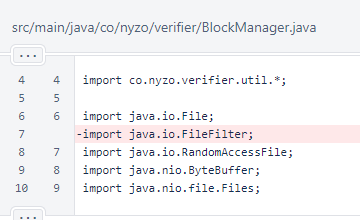
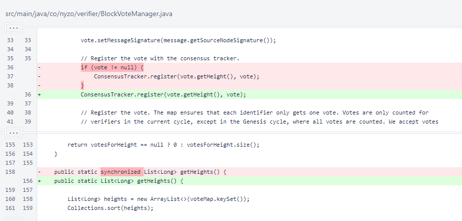
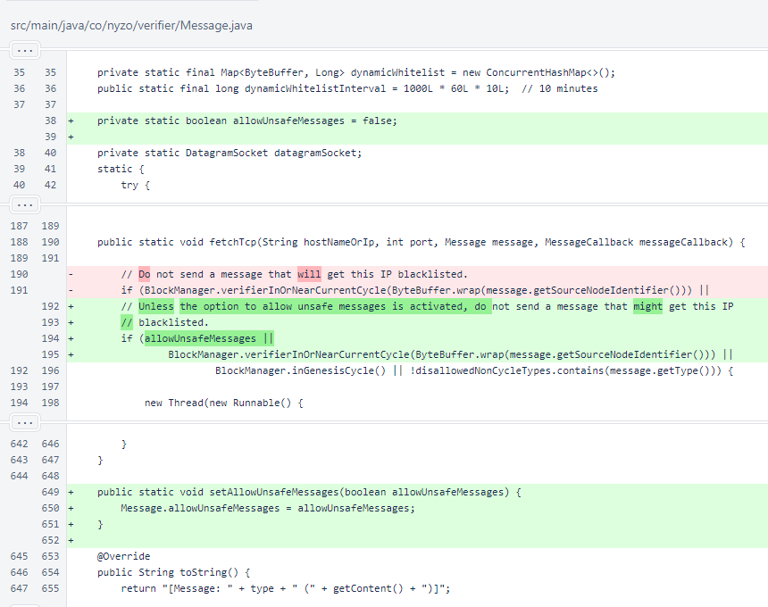
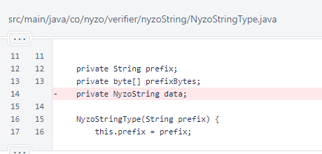

Nyzo version 594 (commit on GitHub) includes only inconsequential code maintenance.
This version affects all run modes, but none of the changes are significant.
These changes, all minor maintenance, are being released now to reduce the size of subsequent updates. There is no need to update to this version.
In BlockManager, an unused import was removed. Imports are not typically discussed in release notes. This one is mentioned because it is the only change in the file.
In BlockVoteManager, an unnecessary null check was removed. An earlier condition already assured that vote was not null.
Synchronization was removed from BlockVoteManager.getHeights(). This method was already thread-safe.
In Message, a field was added to allow unsafe messages to be sent. This is used by some scripts that are not yet published.
In the NyzoStringType enumeration, the unused data field was removed.
